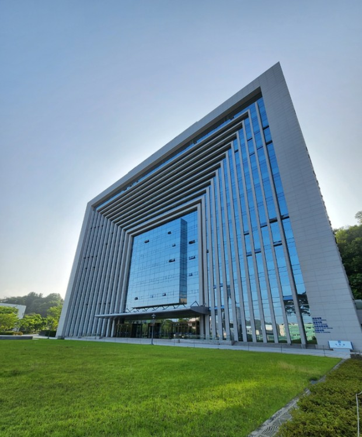

나의 전공
건축공학과

건축공학은 건축물을 설계, 건설, 유지 보수하는 과학과 기술의 결합입니다. 이 분야는 구조, 재료, 환경, 안전 등을 고려하여 건물을 설계하고 건설하는 프로세스를 다룹니다.
핵심적으로 배우는 3가지는 다음과 같습니다.
- 건물의 구조적 안전성을 보장하기 위해 건축물의 구조를 설계하는 기술을 배웁니다.
- 난방, 냉방, 공기순환, 전기 및 배관 시스템 등 건물 내의 편의 시설을 설계하고 구축하는 방법을 배웁니다.
- 다양한 건축 재료의 특성과 사용 방법에 대해 학습합니다.